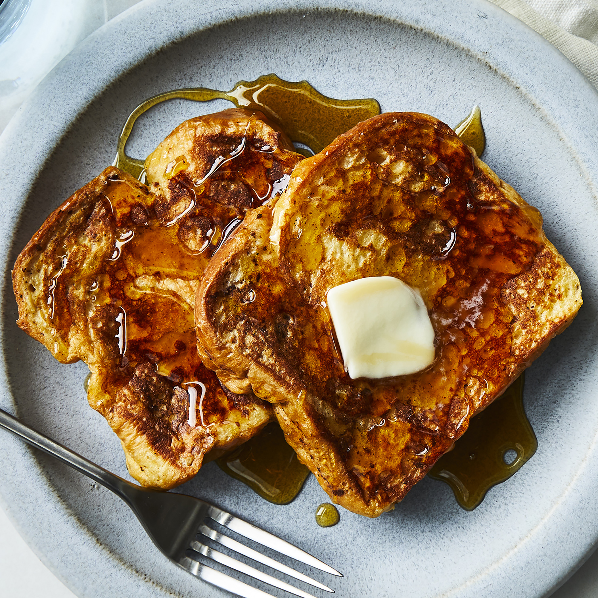

French Toast Recipe

Beautiful french toast
Here's everything you need to know about making the best French toast
of your life, including the best bread to use and what ingredients
you need.
ingredients
- White Bread
- Eggs
- Milk
- Vanilla
- Cinnamon
- Salt
- Butter
Steps
- Whisk milk, eggs, vanilla, cinnamon,
and salt together in a shallow bowl.
- Lightly butter a griddle and heat over medium-high heat.
- Dunk bread in the egg mixture, soaking both sides.
Transfer to the hot skillet and cook until golden,
3 to 4 minutes per side. Serve hot.
- Enjoy!